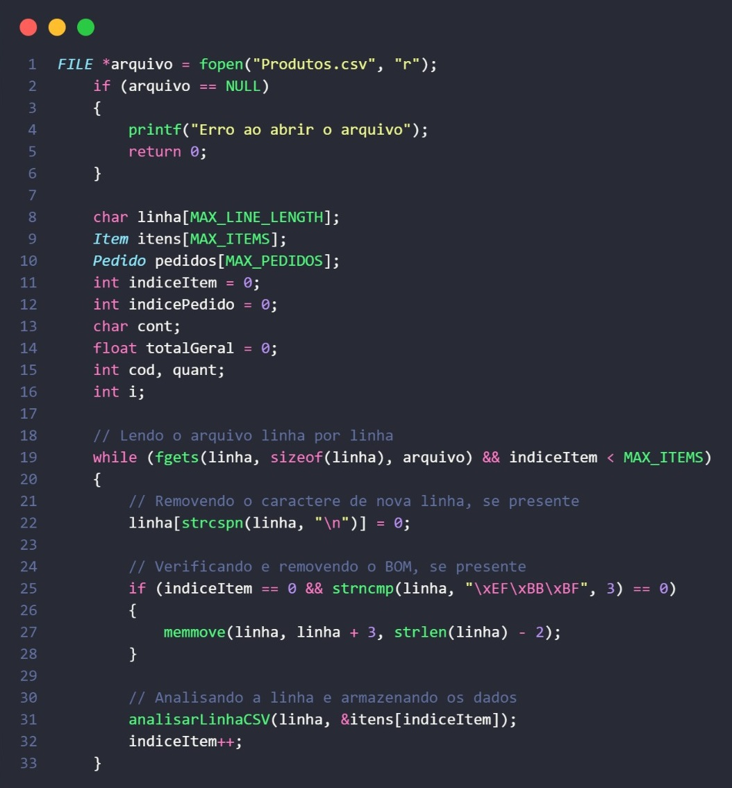
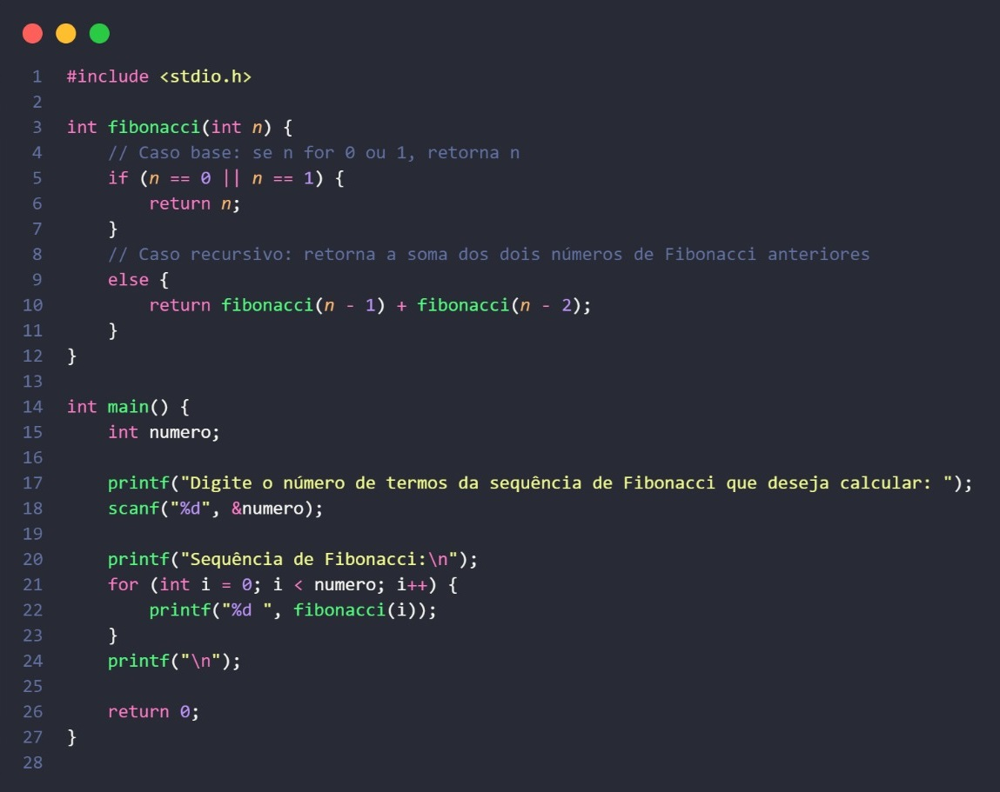

Portfolio
Ler Aquivo CSV
fibonacci em C
Alocação Dinamica
Ler Aquivo CSV
Este código em C faz a leitura de um arquivo CSV chamado "Produtos.csv", linha por linha, e processa seus dados, armazenando-os em uma estrutura chamada.
fibonacci em C
Este código C calcula e exibe a sequência de Fibonacci até um determinado número de termos que o usuário especifica.
Alocação Dinamica
Este código C faz a alocação dinâmica de memória para armazenar uma lista de inteiros fornecidos pelo usuário, permitindo que o usuário insira valores em um array cujo tamanho é ajustado conforme necessário.